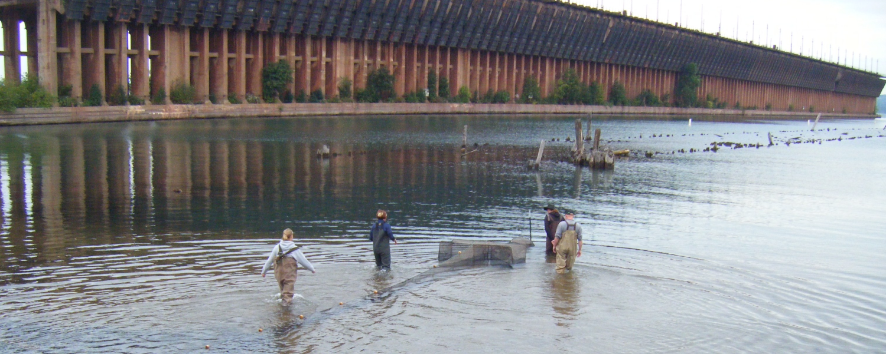

I worked for Northland College as a fisheries and statistics professor for 26 years until 2022. I believe in Northland’s mission and core values surrounding the environment, sustainability, and social justice. I very much enjoyed helping students to reach their academic and career goals.
While at Northland (and both before and since) I had opportunities to pursue my own scholarly interests. Towards that end I authored a fisheries-related book, book chapter, and several journal articles, and developed software mostly related to fisheries analyses.
Though retired from that career I still, as part of the fishR core team, actively maintain the fishR webpage1 and several fisheries-related R packages.
My professional record is recorded on my CV and in the links above and below.
Footnotes
Resources for performing fisheries analyses in R.↩︎